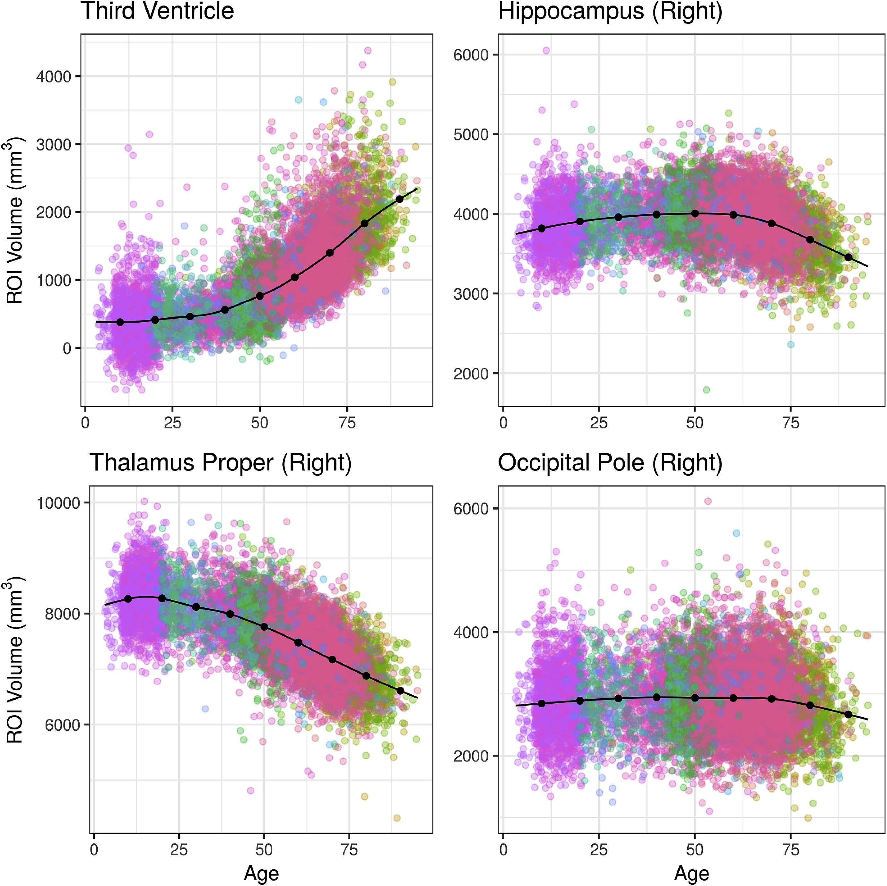
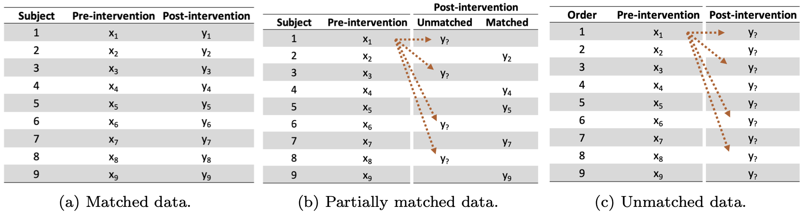

Introduction
In this post, I review progress in my research so far, and distill my work into three themes spanning topics in biomedical sciences and applied statistics.
2018 to 2023: Five years of research, three themes
As we’re nearing the end of the calendar year, I found it a good opportunity to present my research in this blog post and identify three different themes across the statistical and biomedical applications that I’ve worked on. Those themes are computational, clinical, and missing data methods. I’ve been fortunate to co-author a number of published papers over the past five years, and I’ve included links to relevant articles where they fit within the above themes. I’ll cover each theme in more detail below.
Theme 1: Computational Research

Published Papers
DOI: Click to read article.
DOI: Click to read article.
DOI: Click to read article.
DOI: Click to read article.
DOI: Click to read article.
Theme 2: Clinical Research
Pulmonary and Critical Care Collaborations
In 2021, under Dr. Ryan Peterson, I joined Colorado School of Public Health’s PTraC Team, which specializes in statistical research services for the Division of Pulmonary and Critical Care Medicine at Colorado. I was fortunate to work with excellent clinical collaborators at PTraC, including specialists in lung transplant, severe asthma, and pulmonary hypertension. My work was characterized by general applications of regression models to observational data, meaning data were collected by recording clinical events (as opposed to data collected from controlled experiments). Data types were highly heterogeneous and included electronic health records, insurance claims, and a national disease registry. Among the more common methods I used were survival analysis and longitudinal modeling, two popular frameworks for fitting regressions to biomedical datasets. While at PTraC, I was selected to present a lightning talk on my work at the 2022 Symposium on Statistics and Data Science in Pittsburgh.
Published and Accepted Papers
DOI: Click to read article.
Theme 3: Missing Data Methods

The last theme of my research deals with missing data. Missing data are common yet complicated by enormous heterogeneity; missing data can arise at various stages within a study, and they present so many challenges that practitioners often ignore missing data altogether. In my time at Colorado, I encountered missing data in observational studies due to participant dropout or early mortality. When working with this kind of missing data, I often used multiple imputation by chained equations2 to replace missing observations with values that would be realistic given the remaining data. This technique works well when certain assumptions are met and is conveniently implemented inR by the mice package.
However, another kind of missing data can arise in studies investigating pre-post differences that fail to collect unique identifiers for each participant. For my master’s thesis at Colorado, I analyzed techniques to handle this particular case of paired inference, which we refer to as ‘partially matched’ data. My work on this subject is currently under review, but the pre-print is linked below, co-authored by the following members of my thesis committee:
- Dr. Ryan A. Peterson, Assistant Professor of Biostatistics and Informatics at the Colorado School of Public Health
- Dr. Bailey K. Fosdick, Associate Professor in the Department of Biostatistics and Informatics in the Colorado School of Public Health
- Dr. Julia Wrobel, Assistant Professor of Biostatistics at Emory University
Preprint Papers
DOI: Click to read preprint.
Conclusions and Next Steps
Looking back at the past five years, it’s clear that I’ve primarily worked on academic research projects focusing on biomedical diseases and health interventions. Broadly, I’ve developed an expertise as a biostatistician and data scientist in the medical research context.
If I am to speculate on the direction of the next five years, I would predict much of the same kind of work, but with expansions into new contexts such as business and sports analytics. These areas excite me by presenting an opportunity to integrate my undergraduate business experience with cutting-edge data science methods. I’ve begun to work a little in these areas as an independent consultant through Upwork (a freelancing platform), and I hope that I can continue to find work with clients who value my insight in diverse and wide-ranging projects.
In 2024, I look forward to beginning a new position as a data scientist at SygnaMap, a bio-tech startup based in San Antonio. At SygnaMap I will be helping to develop novel biomarkers using metabolomic profiles, which will draw on many of my past experiences including the three themes of computational complexity, clinical utility, and challenges arising from missing data.
Footnotes
W.E. Johnson, C. Li, A. Rabinovic. Adjusting batch effects in mircoarray expression data using empirical Bayes methods. Biostatistics, 8 (2007), pp. 118-127. https://doi.org/10.1093/biostatistics/kxj037.↩︎
Azur, M.J., Stuart, E.A., Frangakis, C. and Leaf, P.J. (2011), Multiple imputation by chained equations: what is it and how does it work?. Int. J. Methods Psychiatr. Res., 20: 40-49. https://doi.org/10.1002/mpr.329.↩︎